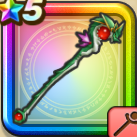

ドラゴンのつえ
攻略班 9.0点 / マヌーサドラゴンパワー竜の暴風ドラゴラムまもりの竜鱗※錬成で強化可能
くわしい特徴
【レベル別習得スキル】 Lv1【賢者】さいだいMP+5 Lv1バギ属性じゅもんダメージ+10% Lv1メラ属性じゅもんダメージ+10% Lv10マヌーサ（消費MP：16）敵全体を幻でつつみこむ Lv15ドラゴンパワー（消費MP：残りMPの約15％）自身の守備力と攻撃呪文の威力を2段階上げ、メラとギラ耐性を1段階上げる。さらにターン開始時に最大HPの約15％回復する。効果は全てスキル使用時から4ターン継続。 Lv20竜の暴風（消費MP：26）敵1体にバギ属性の呪文特大ダメージを与え、たまに攻撃力を1段階下げる Lv30ドラゴラム（消費MP：50）敵全体にメラ属性の呪文特大ダメージ。追加でメタル系なら+10ダメージ、それ以外には呪文小ダメージ Lv35エレメント系へのダメージ+5% Lv40ゾンビ系へのダメージ+5% Lv45戦闘終了時にMPを10回復する Lv50まもりの竜鱗（消費MP：5）戦闘開始時に発動し、2ターンの間、悪い状態変化と状態異常を防ぐ効果を自身に付与する錬成スキル改1竜の暴風改（消費MP：40）敵1体にバギ属性の呪文特大ダメージを与え、こうげき力を下げる改2ドラゴラム改（消費MP：59）敵全体に反射不可のメラか属性の無い呪文特大ダメージを与え、追加で呪文小ダメージ(メタル系に+55ダメージ)を与える改3ゾンビ系へのダメージ+10%改4錬成ぶき特別演出解放・メガモン討伐結果発表時に特別演出が追加・武器の見た目に特別なエフェクトが追加改5キングタイム（消費MP：8）戦闘開始時にまれに味方全体を優先して行動させ、敵にメタル系が含まれているなら味方全体を優先して行動させる改6魔力の暴走率+5%改7ドラゴラム改のダメージ+5%改8魔力の暴走率+5%改9ドラゴラム改のダメージ+5% 【限界突破スキル】 1凸じゅもんダメージ+5% 2凸じゅもんダメージ+5% 3凸じゅもんダメージ+5% 4凸じゅもんダメージ+5%